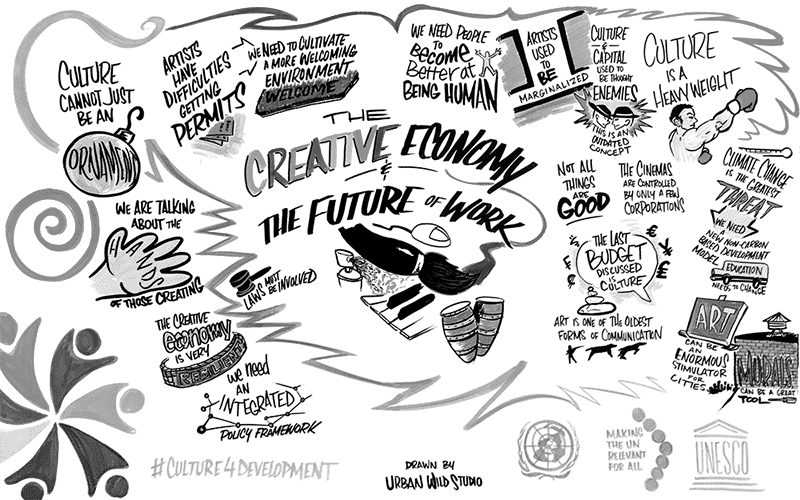

Communities often look outward for economic development opportunities while overlooking the creative and entrepreneurial talent that already exists within their own communities.

When Millennials began entering the workforce in the years following the Great Recession, they encountered a labor market very different from the one previous generations had experienced. Outsourcing, stagnant wages, diminishing benefits, short-term employment, and the emerging gig economy all contributed to a growing sense that traditional employment no longer offered the stability it once promised.
But the same forces that made traditional employment more difficult also created new opportunities. A generation raised in an increasingly technology-driven economy had become comfortable with flexibility, independent work, multiple income streams, and using a variety of skills in different ways. Those characteristics can translate naturally into entrepreneurship.
Much of the criticism directed at Millennials during this period focused on their perceived lack of communication skills, work ethic, or commitment to traditional workplaces. But another interpretation is possible: perhaps many Millennials simply did not fit comfortably within workplace norms established by previous generations. Rather than following a single traditional career path, they were increasingly willing to create their own.
That willingness to pursue independence and alternative forms of employment helped contribute to an economic environment in which creativity and entrepreneurship became increasingly important.
Contemporary research and reporting at the time supported this trend. A 2017 report from America's Small Business Development Centers found that:
- 62 percent of Millennials surveyed said they dreamed of starting a business;
- 49 percent had specific plans to do so within the next few years; and
- 61 percent believed their best job security would come from owning their own business.
These figures are particularly interesting because entrepreneurship has traditionally been associated with risk rather than security. People start businesses for many reasons: they may want to be their own boss, have an idea they believe in, create greater financial stability for their families, or simply gain more independence over their professional lives.
For a generation that came of age during a period of considerable economic uncertainty, however, entrepreneurship could begin to look less like an unnecessary risk and more like a way of creating control over one's own future.
That same entrepreneurial mindset is important at the community level.
Every community has individuals who possess creative skills that could potentially become businesses, careers, or economic assets. They may be designers, artists, musicians, writers, programmers, photographers, craftspeople, developers, or entrepreneurs working on ideas that have not yet become viable businesses.
Many of these individuals do not necessarily identify themselves as members of a "creative class." They may simply consider themselves people with a hobby or a particular skill.
That distinction matters.
Creative industries—including marketing, architecture, visual arts and crafts, design, film and media, digital games, music and entertainment, and publishing—have become increasingly important components of local and regional economies. While some of these industries are obvious sources of income, creative work often begins informally.
Someone may design websites after work. Someone else may sell handmade products at local festivals. A person working full-time at a local retailer may spend evenings developing a digital game. A talented photographer may be taking pictures on weekends while working an entirely unrelated day job.
These activities are easy to overlook.
Community leaders, economic development organizations, and local governments traditionally tend to focus on established businesses, major employers, commercial development, and businesses that are already generating significant economic activity. Those things are important. But economic development can also mean identifying the person who has not yet become a business owner.
Turning a hobbyist into a successful entrepreneur does not happen simply because someone recognizes their talent. It takes guidance, resources, mentorship, access to capital, and an environment in which taking a reasonable risk is possible.
But the potential is there.
Creative entrepreneurs often possess characteristics that can be valuable in an evolving economy: adaptability, a willingness to learn, the ability to work across multiple disciplines, and a willingness to experiment. They may also be more comfortable with the uncertainty that accompanies entrepreneurship because they have already learned to operate outside traditional employment structures.
For communities, the challenge is recognizing this talent before it leaves.
Creative people can be found in obvious places—at craft fairs, festivals, arts organizations, and local events—but they can also be found in much less obvious places. They may be working in a retail store, developing an idea at their kitchen table, creating music in a garage, or building a business from their parents' basement.
Sometimes they simply need someone to recognize what they are doing and ask, "What if this could become something more?"
Not every creative endeavor will become a successful business. Not every entrepreneur will succeed on the first attempt. Some will fail, and some will decide that their creative work is better left as a hobby.
That is part of entrepreneurship.
The important thing for communities is creating an environment in which people have the opportunity to try.
Economic development is not only about attracting businesses from somewhere else. It is also about recognizing the people who are already here, understanding their talents, and creating opportunities for them to grow.
The next successful business in a community may not arrive through a corporate recruitment effort or a major development project. It may already be there—being created by someone who simply has not yet been given the opportunity to turn an idea into something more.
That is the economy of creativity.